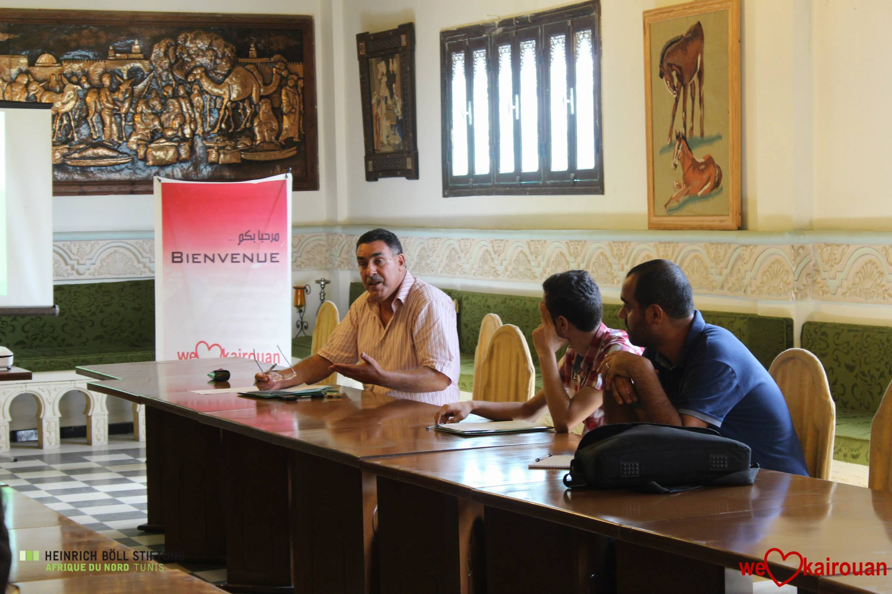
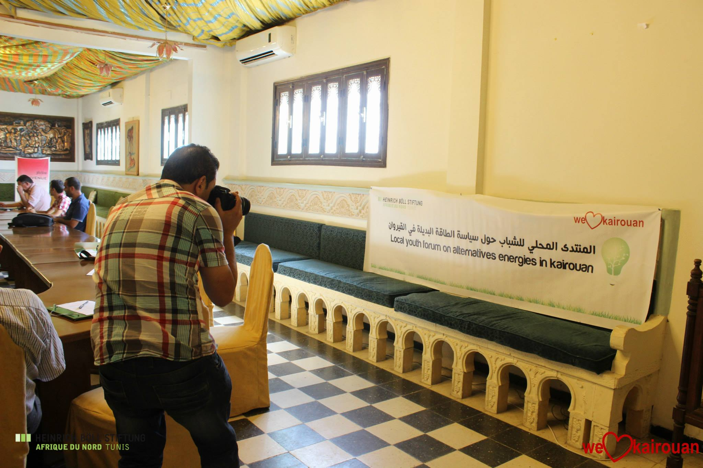
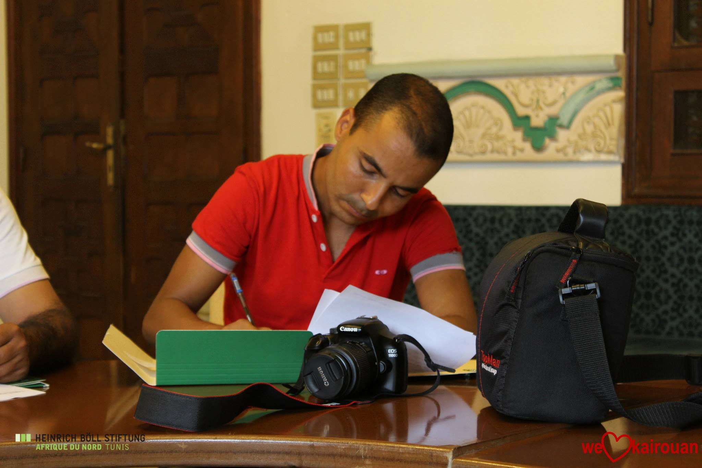
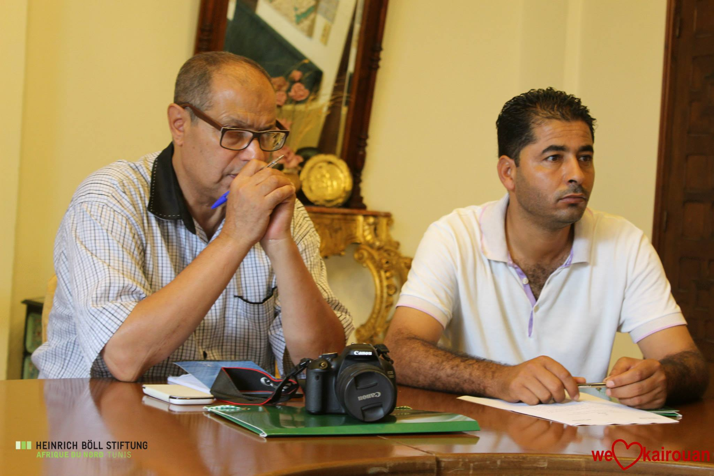
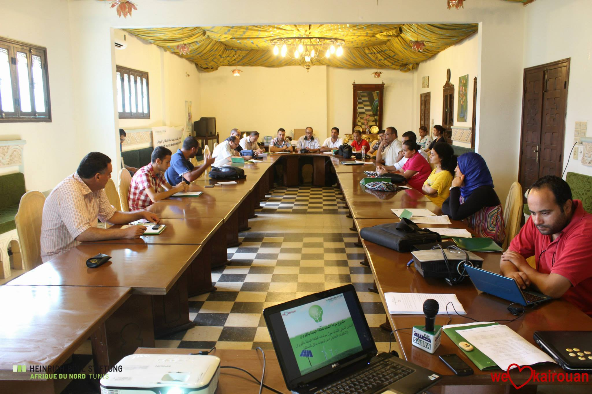

We love Kairouan Association organized on 6 and September 7, 2014 the youth forum on alternative energy policy in Kairouan : identify current problems
And the development of alternative strategies for the future support of the Heinrich Böll Foundation-Office of Tunisia. Forum aims to build the capacity of participants in the field of
alternative energies by providing an opportunity for the youth to dialogue among themselves and with local authorities and specialists in the field of energy with respect to energy policies and strategies in Kairouan, Tunisia and through work on the paper and the recommendations of the advocacy campaign





The second youth forum on alternative energy policy in Kairouan